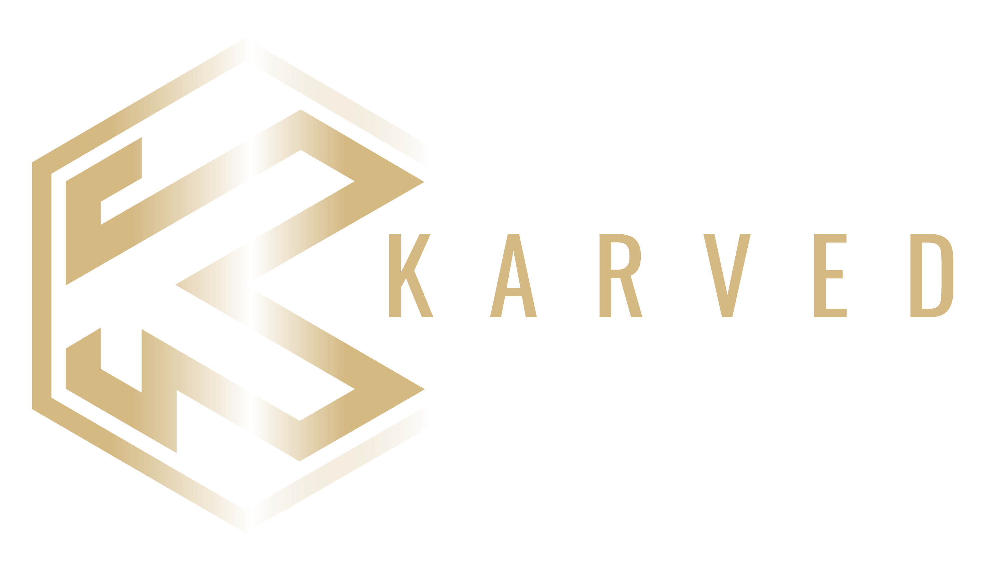

Learn how 100+ guys have become peak performers with the KARVED system
Become energized, confident and ripped in 90 days with our 5 phase system
Step 1: Watch full video to see if you qualify
Step 2: Click below to take the peak performance quiz. 👇